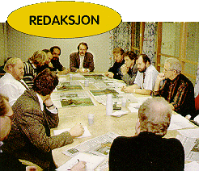
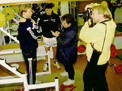
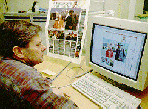

Sjefsredaktør Einar Hanseid samler andre redaktører og avdelingsledere til morgenmøte. Dagens avis gjennomgås kritisk, og de siste detaljer på morgendagens avis finpusses.

Fotograf Fin Eirik Strømberg og journalist Mette Bugge lager sportsreportasje med landslagsspillerne Henning Berg og Mons Ivar Mjelde på Toppidrettssenteret.

Alle avissidene må over på dataanlegget før trykking. Her overfører reprotekniker Svein Helge Janssen en uttegning fra redaksjonens layoutavdeling til dataskjermen.
Slik lages Aftenposten

[Innhold] [Info]
[Aftenposten hjemmeside] [Til Ung hovedside]